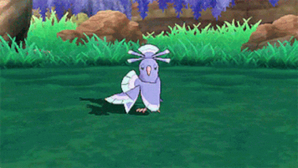
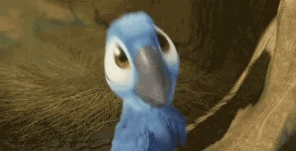

O que leva a ararinha-azul aos céus é a presença de ossos ocos e penas, além de uma musculatura propícia e a
falta de estruturas que elevariam seu peso.
Pode ser encontrada nos biomas tropicais do Brasil, Paraguai e Bolívia, mas é encontrada
predominantemente no pantanal e no nordeste brasileiro, entretando é considerada praticamente extinta desde
dos anos 2000, além de não ser mais encontrada em biomas convencionais e sim em cativeiros privados. O
nascimento do primeiro filhote de ararinha-azul na Caatinga foi um marco histórico.
É herbívora e devido a seu bico forte e encurvado alimenta-se preferencialmente de sementes
de pinhão, frutos do juazeiro, além de outros alimentos típicos do seu habitat. Sua dieta é restrita a
frutos e sementes que se localizam em sua maioria na Caatinga Baiana, conhecida como Raso da Catarina.
Assim como muitas outras aves, se locomove voando. Seu corpo com penas e ossos ocos
auxiliam nessa função, além de sua musculatura da coluna e do peito serem especificamente desenvolvidas para
tal função.
Como principal estratégia de defesa, assim como das outras aves, a ararinha-azul usa de sua capacidade de voar
para fugir de seus algozes.
Sua respiração é pulmonar e seus pulmões são extremamente eficientes, pois são compactos e
estão ligados aos sacos aéreos - estrutura que trabalha na diminuição da densidade da ave simultâneo ao voo -,
além de possuir, na traqueia, uma estrutura nomeada de siringe, com músculos vocais dos quais propiciam o canto.
A ararinha-azul também possui um sistema circulatório completo e duplo, o sistema duplo ocorre por
causa deste animal ser homeotérmico (temperatura constante), o que significa que o sangue atravessa duas vezes o coração. Apresentam um sistema nervoso central e periférico com doze pares de nervos cranianos. O encéfalo apresenta cerebelo bem desenvolvido, pois necessitam de muito equilíbrio para o vôo. Têm visão bem desenvolvida. Percebem cores nitidamente, pois a retina contém muitos cones com gotículas de óleo.
Estes animais se reproduzem de forma sexuada, possuindo ninhos em cavidades de troncos. Sua época
reprodutiva se esvai desde novembro até janeiro. Os ovos são gerados na primavera, e os adultos alimentam
suas crias regurgitando alimento até atingirem determinado tempo de vida. Com seis meses já podem ser
considerados adultas, porém só possuem maturidade de reprodução a partir dos 3 anos.
A ararinha azul é dócil e geralmente se alimenta e convive em bandos.
Como personagens animados, podemos citar o Pokémon Oricorio (em primeiro), mas também o
indispensável Blu (em segundo) do filme Rio
[Wikipédia].

